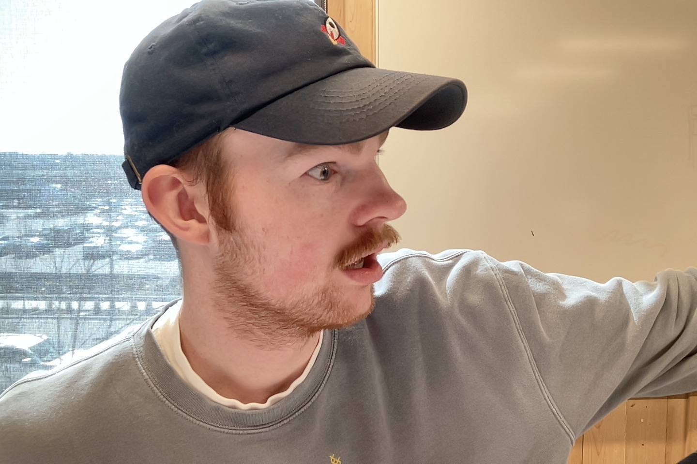

Gavin 😳 Parrish
Origin Story
My story begins as a young boy in the exotic and bustling small town of St. John, Washington, where I was raised my entire life which started in 2001. After 18 years I found myself in Cheney studying Film.
Super Power
I'm really tall.